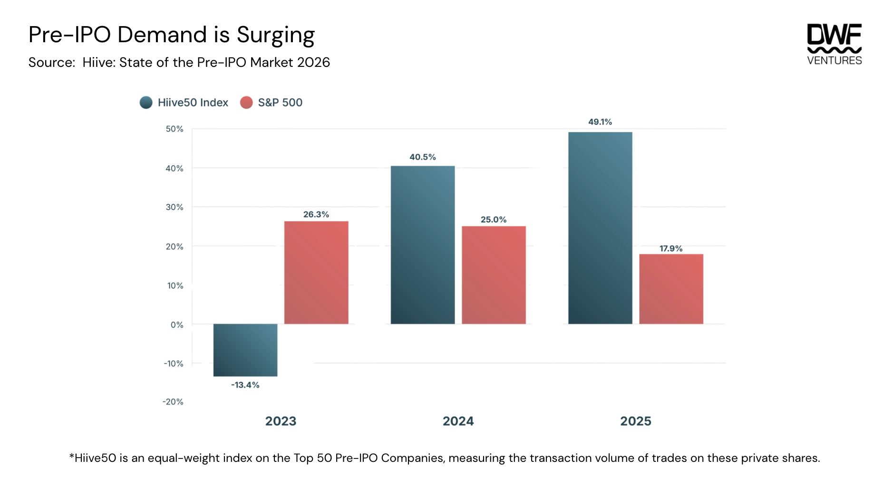
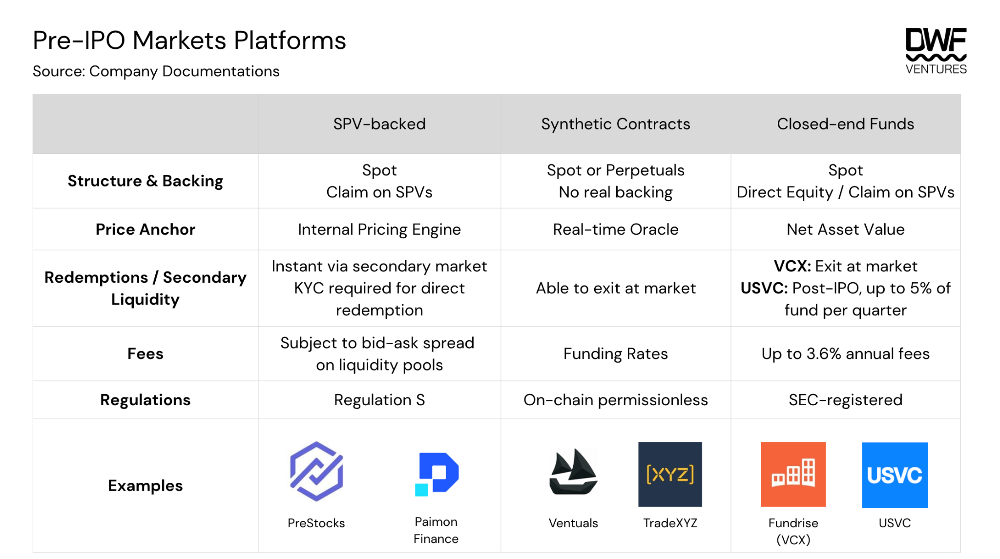
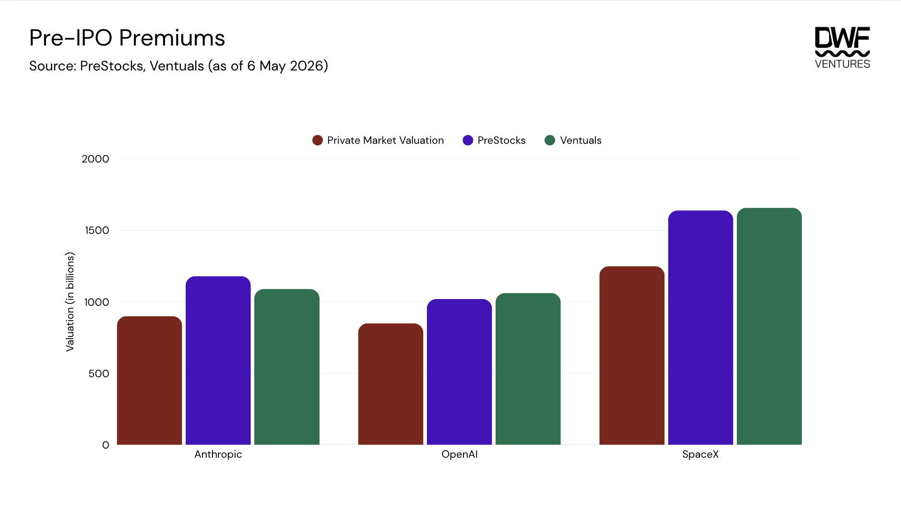
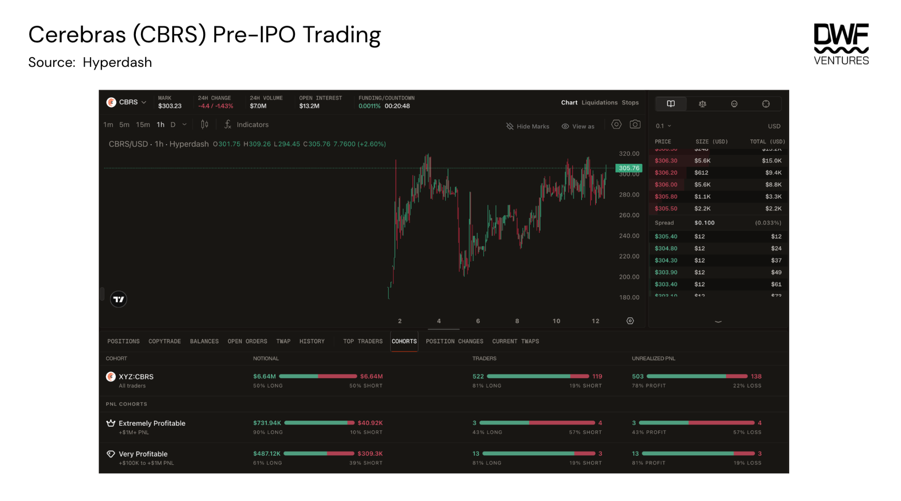

Key Takeaways:
Companies are staying private significantly longer, with the average time to IPO doubling since the 1990s. This concentrates the most valuable growth phase behind private markets, driving retail demand toward on-chain alternatives.
Three structurally distinct exposure types have emerged: SPV-backed tokens, synthetic perpetual contracts and closed-end funds. Each has varied mechanisms ranging from backing, price anchor, redemptions and regulations, with each serving investors of different risk profiles.
Pre-IPO shares usually trade at persistent premiums of 20–40% above last known private market valuations, with no short-side counterforce to correct them on most platforms.
As appetite grows beyond a retail level, a huge opportunity is present for a platform that can solve for liquidity and all the risks outlined in this report.
The introduction of public markets was built on a simple premise: a democratized wealth building tool for the ordinary investor. Traditionally, initial public offerings (IPOs) have been a way for startups to access a larger pool of capital, raising funds for further development and growing awareness. This allowed investors to gain exposure to early stage companies, being rewarded as those companies grew over time. However, as more private capital and institutions entered the mix, enhanced price discovery became limited to private markets.
This skews the supposed 'free market' nature of stocks, as IPOs transitioned towards an exit liquidity event for institutions instead. Crypto emerged as an arena aimed to level the playing field, with ICOs and tokens becoming the first step for any project launching, giving permissionless access to anyone globally. That ethos has extended beyond crypto-native assets, with tokenization emerging as a key use case on-chain. Public equities, commodities and now pre-IPO markets are being brought on-chain, becoming a new venue for price discovery beyond infrastructure that has historically dominated these markets.
State of the Market
The exponential growth of pre-IPO markets can be attributed to the fact that companies are taking much longer than before to go public. The average time for a company to IPO is now 12 years, as compared to 4–5 years back in the 1990s. With companies such as SpaceX, OpenAI and Anthropic slated to file for IPOs at record-breaking valuations, demand for accessibility to private markets is higher than ever. Private secondary markets are booming, with Hiive's State of the Pre-IPO Market report showing the Hiive50 secondary market index outpacing the S&P 500.

Pre-IPO demand is surging — Hiive50 Index vs. S&P 500 (Source: Hiive)
Demand has largely been gathered around a few industries — crypto, AI and fintech. The AI sector dominates by having the most number of companies measured in the index, while crypto companies saw much higher demand for shares on a per company basis. Volume on Hiive hit an all-time high with premiums for top companies surging between 100–200%.
Hiive's average transaction size on the platform exceeded over $1m in 2025, signaling that their market largely serves institutional buyers. This could be attributed to regulations whereby the platform is restricted to accredited investors who tend to write larger checks and have a longer term horizon. Thus, retail demand for pre-IPO exposure remains an underserved market, and competition has begun to emerge on-chain.
Democratizing Price Discovery
The type of exposure that users have can be categorized into three pillars: SPV-backed, synthetic contracts and registered closed-end funds. The table below shows how each category differs on its structure, backing, price and redemption mechanisms, fees and regulations.

Pre-IPO markets platforms (Source: Company documentations)
Structure & Backing
Investors can achieve exposure through spot or perpetual markets, with the latter only available on-chain for now. Platforms that offer spot exposure usually have also acquired real backing of these shares, whether through special purpose vehicles (SPVs) or direct equity in companies. In theory, this creates a price floor giving higher confidence to investors as these tokenized shares can eventually be redeemed into USDC or actual shares once companies IPO.
Meanwhile, synthetic contracts offered through perpetuals are only pegged to a real-time oracle with no backing or claim to the underlying. Closed-end funds like VCX and USVC involve underlying structures that are more indirect and opaque. Even though VCX holds direct equity in the companies, the rights do not get passed through to the investors in VCX. USVC mandates allow for direct allocation or stakes in VC funds that have exposure into the pre-IPO companies, adding additional layers in terms of counterparties and introducing illiquidity when it comes to eventual redemption.
Price Anchor
Price oracles across these platforms are typically derived from a blend of off-chain pricing signals (recent transactions on private secondary market platforms) and a moving average of the on-chain mark price based on demand. Methodology and update frequency vary significantly by platform: PreStocks' oracle has no fixed cadence, while Ventuals updates every three seconds. For SPV-backed platforms and registered funds, net asset value serves as the pricing benchmark, though tokens and shares can still trade at a premium to NAV depending on investor appetite, given that issued supply is finite.
Ventuals applies additional constraints to limit volatility, capping mark price movement at 1% per three-second update and bounding the mark price within ±20% of the oracle at all times. Since oracle price is a mix of off-chain data and a 2 hour EMA of mark price, this creates a long-skewed market where the mark grinds toward the upper band through a reflexive feedback loop between the mark and the oracle, given that short-side liquidity is thin. Open interest (OI) is also capped between 5–7.5m on available assets on the platform now, which prevents meaningful size and limits price discovery. In a scenario where the cap is reached, existing holders also face pressure to reduce positions as funding rates escalate, making it difficult to maintain exposure at size for an extended period.
Ventuals has made changes to its funding rate mechanism, exponentially increasing funding rate to incentivize shorts as the mark-to-oracle price gets close to the ±20% price band limits. This helps to reduce the intensity of the reflexivity loop to ensure trading experience remains optimal.
Redemptions & Secondary Liquidity
On-chain platforms offer immediate exit through secondary market liquidity, though pool depth constrains the size of any single exit with most swaps also incurring 0.5–1% slippage. As a fund, VCX offers a comparable level of flexibility through its NYSE listing, allowing investors to exit at market price on any trading day.
Direct redemption models are more restrictive and carry higher risks. Redemption into USDC through SPV liquidation can only occur after the underlying positions are sold on private secondary markets, a lengthy process with no timeline confirmation. Underlying fund structures introduce further constraints. USVC has no obligation to repurchase shares from investors, and even if it does offer repurchases, they are capped at 5% of net assets per quarter on a discretionary basis. Investors might end up waiting years just for a full exit, with no guarantee of capital returns in an environment where NAV is declining post-IPO.
Fees
Funds carry management fees that compound quickly when a fund allocates through underlying fund managers, layering a second set of fees on top of the initial rate. USVC's fees are estimated to reach 3.61% annually once underlying fund fees are included, a figure that is not prominently disclosed and can materially affect net returns for investors unfamiliar with the structure.
On-chain platforms do not charge fixed fees but costs are embedded within the bid-ask spread on every swap, meaning transaction size and pool liquidity determine the effective cost of entry and exit. Synthetic contracts on Ventuals carry an additional cost in the form of funding rates, which settle every eight hours rather than hourly as on most crypto perpetual exchanges. That longer settlement interval is designed to make holding costs more manageable for investors taking longer term positions while waiting for the IPO event to happen.
Regulation
SPV-backed platforms predominantly operate under Regulation S, a US securities exemption that restricts offerings to non-US investors. Outside of that constraint, most are accessible globally, though individual platforms might impose additional exclusions for certain countries.
SEC-registered funds like VCX operate under a different framework entirely. As a publicly listed closed-end fund on the NYSE, VCX is accessible to any investor with a brokerage account, allowing it to have the broadest reach in a regulated manner. Synthetic contracts are not regulated, since they are offered permissionlessly on-chain.
Other Potential Risks
- Transfer rights for tokenized equities: This holds more risks for fund structures like USVC than on-chain platforms. OpenAI and Anthropic have publicly condemned unauthorized tokenized exposure offerings and signaled intent to enforce strict controls over share transfer rights. Given that funds rely on the integrity of underlying SPV positions to construct NAV, funds may face a bank run-like scenario where reported valuations cannot be fulfilled upon redemption.
- Underperformance for closed-end funds: Fund structures bundle exposure as an index, leaving investors with no control over individual company allocations. A fund might underperform relative to a concentrated single-name position if allocation decisions do not align with where returns actually accrue.
- Lack of short-side exposure: A structural gap in the market as investors are unable to express short views on spot or hedge on perpetuals. This has contributed to the persistent premiums these assets carry relative to last known private market valuations. Ventuals is one of the few venues offering short exposure through synthetic contracts, though short-side liquidity remains thin given the absence of natural hedging counterparties elsewhere in the market.
- What happens when companies actually IPO? Many of these pre-IPO assets are currently trading at 20–40% premiums on PreStocks/Ventuals to last known private market valuations. There is no guarantee of instant liquidity at IPO, particularly for shares held within SPV structures that require a separate liquidation process. Historical IPO performance adds further pressure as average public listing valuations have come in roughly 25% above IPO raise, leaving investors who entered at a premium with a narrow margin before the trade turns negative. For funds, NAV compression can outpace the pace at which capital is returned, leaving investors exposed during the gap.

Pre-IPO premiums (Source: PreStocks, Ventuals)
A Market for New Entrants
Competition for this expanding market is heating up. Exchanges such as Binance and Bitget have launched their own tokenized versions of pre-IPO shares through integration with PreStocks or having its own synthetic contract. On-chain players are also accelerating, with TradeXYZ introducing pre-IPO perpetuals just last week, already seeing around $7m in daily volume and currently trading at a ~90% premium to its expected IPO valuation (~$160/share).

Cerebras (CBRS) pre-IPO trading (Source: Hyperdash)
New categories are also emerging. Backpack is launching an on-chain IPO supported by Superstate and Solana, which offers investors actual exposure as issued shares are legally recognized securities. IPOs are often largely reserved for institutional and accredited investors, so having an actual regulated offering happening on-chain will be a huge unlock for retail investors.
Where Value Flows
Tokenization of assets will only become more rampant — the longer companies stay private, the more market demand for such exposure will grow. The appetite for such investments has materialized beyond a retail level. Governments, institutions and funds are all fighting for a piece of the pie. For example, the Korean government has recently introduced a 'National Growth Fund' designed for citizen participation, with the goal of investing into the emerging local AI and semiconductor industry. With an expected $160 billion in capital set to be raised from IPOs this year, the race to capture the demand coming from these liquidity events will be huge.
Each new entrant validates the demand of this market but questions still remain on the structures, regulations and viability of these assets given that no real stress test has occurred yet. We believe that the platform solving for liquidity will win in the short term, but regulation remains key in the long term. The SEC-CFTC released a comprehensive report on how federal securities law applies to digital assets — placing a lot of these tokenized SPV wrappers at risk of scrutiny and enforcement once the underlying securities go public. Hence, the platform that can optimize for all conditions will stand to inherit a huge market.